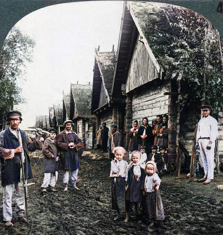

Cold revolution exhibit
Observations: Tremendous poverty, women primarily wore kerchiefs, homes with straw roofs, widespread alcoholism, samovar. We compared the Russian countryside to the Polish countryside we know from visiting grandparents in terms of culture and visuals.
Lenin essay discussions: We talked about the arguments we used in our essays and determined how crucial the weakness of the opposition was to the Bolshevik consolidation of power. While we all agreed that the opposition was enormously weak, we were conflicted on the role of the peasants in the revolution. Some members took on the revisionists stance (used the perspective of Fitzpatrick in the essay) and said that the peasants were the foundation of the revolution was the peasant proletariat. Nonetheless, most of us were more on the side of the revolution being a coup orchestrated by Bolsheviks in cities.
